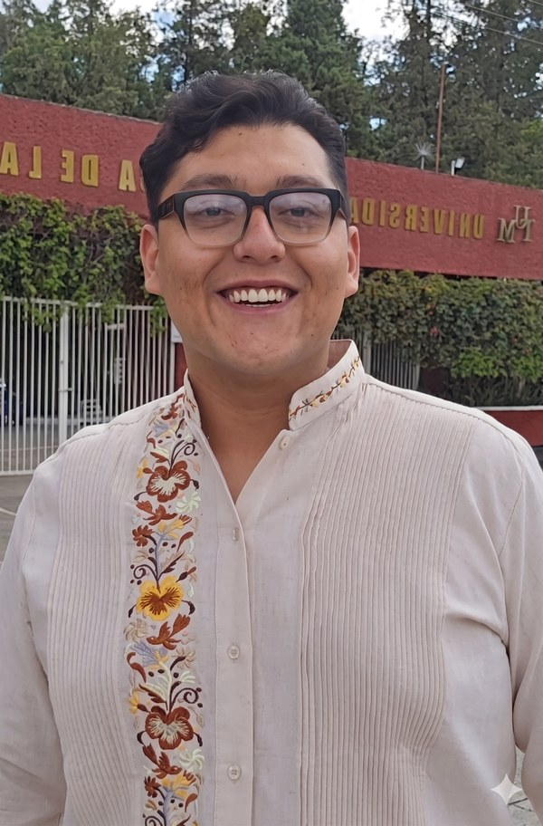
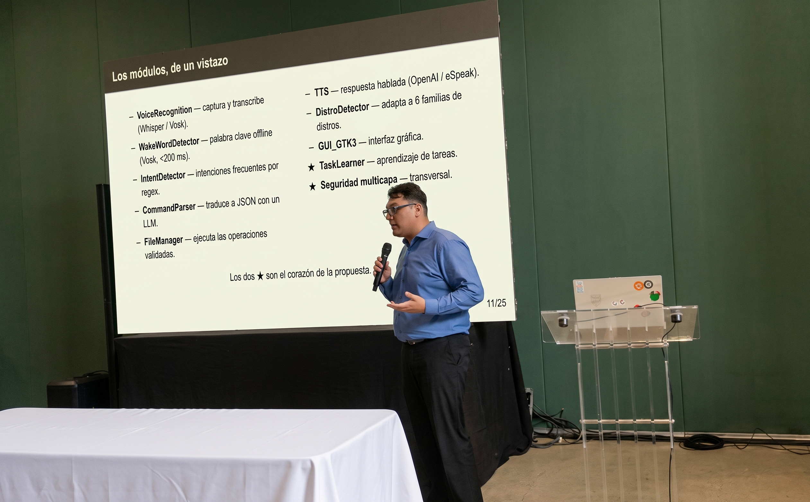
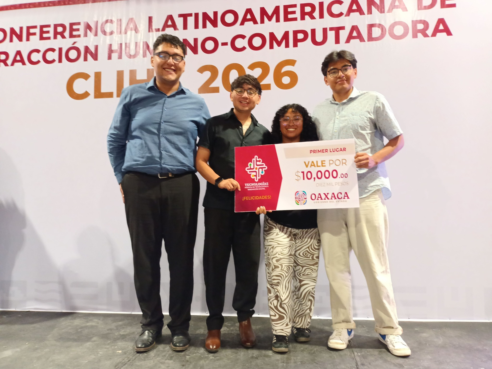
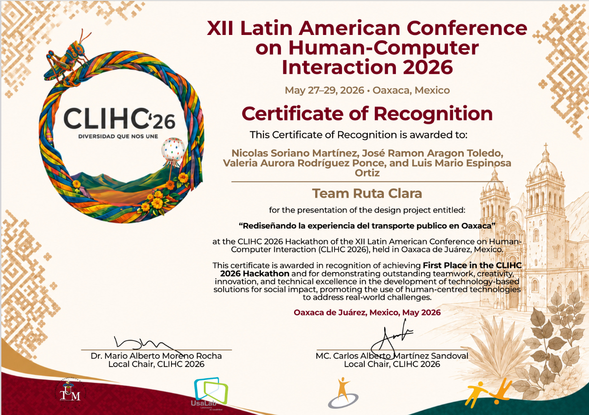

Ingeniero en Computación · IA Centrada en el Humano
Desarrollador de software e investigador. Creador de LIMA, asistente de voz para GNU/Linux presentado en conferencias internacionales.
Soy Ingeniero en Computación egresado de la Universidad Tecnológica de la Mixteca, especializado en el desarrollo de aplicaciones con Inteligencia Artificial. En proceso de titulación por tesis, con defensa prevista para julio de 2026.
Mi proyecto principal es LIMA (Linux Intelligent Middleware Assistant), un asistente de voz para GNU/Linux con enfoque en IA Centrada en el Humano (HCAI), presentado en CLIHC 2026 y aceptado en AIS/IADIS 2026 (Valencia, España).
Soy autodidacta, comunicativo y apasionado por resolver problemas reales con tecnología. Domino Python, JavaScript y Java, con experiencia en Angular, FastAPI, Node.js y múltiples APIs de IA.
Roles y proyectos donde he aportado soluciones tecnológicas reales.
Aplicaciones e investigaciones con impacto real y reconocimiento académico.
Middleware modular que permite interactuar con GNU/Linux en español mediante lenguaje natural y voz. Pipeline: captura de voz/GUI → detección local de intenciones → análisis con GPT-4o → validación de seguridad en 3 niveles → ejecución con retroalimentación educativa (TTS). Enfoque en Inteligencia Artificial Centrada en el Humano.
Sistema para diagnóstico de cáncer de mama (Wisconsin Breast Cancer), orientado a minimizar falsos negativos. Selección de características con Algoritmo Genético y ajuste de hiperparámetros con SA, GWO y WOA. Modelos: Random Forest, Extra Trees y XGBoost.
CharlesTherapy: plataforma de terapia conversacional con enfoque rogeriano (Angular + Express + MySQL).
Kuiti: chatbot universitario de la UTM con NLP sobre la API de OpenAI.
Bot de WhatsApp que automatiza la generación de facturas fiscales para Karimnot. El usuario envía foto del ticket y el bot captura los datos para emitir la factura automáticamente mediante la API de Meta.
Contribuciones al campo de la Interacción Humano-Computadora e Inteligencia Artificial.



Tecnologías, herramientas y competencias aplicadas en proyectos reales.
¿Tienes un proyecto, una colaboración o una oportunidad laboral? No dudes en escribirme.